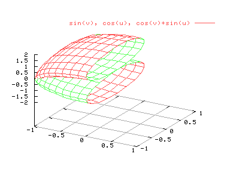

| Herramientas en GNU/Linux para estudiantes universitarios: | ||
|---|---|---|
| Anterior | Capítulo 5. Representaciones paramétricas | Siguiente |
gnuplot también permite realizar gráficos paramétricos tridimensionales. Las variables paramétricas son "u" y "v", y se utilizan xrange, yrange y zrange para determinar el tamaño del gráfico. Los rangos uragne y vrange determinan los rangos de las variables paramétricas. Por ejemplo:
set xrange [-1:1]
set yrange [-1:1]
set zrange [-2:2]
set isosamples 20
set grid
splot [-pi:pi][-pi:0] sin(v),cos(u),cos(v)+sin(u)

La mayor parte de las opciones para gráficos 3D también se pueden usar en los gráficos paramétricos.